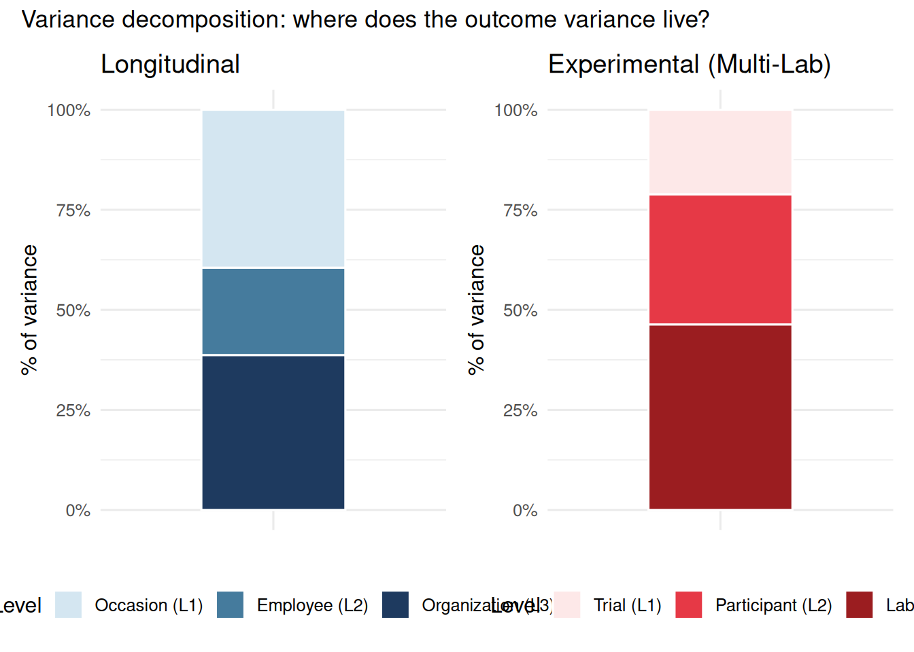

Real data rarely comes in neat two-level packages. The nesting structures encountered in organizational research and experimental science are often deeper, and collapsing them to two levels misattributes variance in ways that affect both inference and interpretation.
Three-level structures arise in two distinct research contexts:
Longitudinal organizational research. Quarterly observations (L1) are nested within employees (L2), who are nested within organizations (L3). The ICC at L3 tells you how much organizations differ in employee outcomes — a direct measure of organizational-level influence. Ignoring the organizational level means assuming that all employees within the same firm are no more similar to each other than to employees at a different firm — an implausible assumption when organizations shape work environments, norms, policies, and resources.
Multi-site experimental research. Trials (L1) are nested within participants (L2), who are nested within labs or research sites (L3). The ICC at L3 tells you how much results vary across labs — a direct measure of the replication generalizability problem. A multi-site replication study — increasingly common in psychological science as a response to the replication crisis — is structurally a three-level model. Ignoring the lab level treats site-to-site variation as random noise attributable to participants or trials, misattributing variance and producing overconfident estimates.
\(\sigma^2_v\): variance at level 3 (between organizations or labs)
\(\sigma^2_u\): variance at level 2 (between employees or participants, within groups)
\(\sigma^2_e\): variance at level 1 (within employees or participants, across occasions or trials)
The total variance in \(Y\) is \(\sigma^2_v + \sigma^2_u + \sigma^2_e\), and each component can be expressed as a proportion of this total to obtain the ICCs.
13.3 Longitudinal Example — Employee Wellbeing Panel
Design: 6 organizations × 12 employees × 6 quarterly waves = 432 observations. The three levels are:
Level 2: employee (random intercept per employee, nested within organization)
Level 3: organization (random intercept per organization)
Research question: How much of total well-being variance is attributable to organizational differences vs. employee-level stable differences vs. wave-to-wave fluctuation within employees?
Code
n_orgs <-6n_emp <-12# employees per organizationn_waves <-6# quarterly observations per employee# Level-3 random effects (organization)org_effects <-rnorm(n_orgs, 0, 4) # SD = 4 between organizations# Level-2 random effects (employee within organization)emp_effects <-rnorm(n_orgs * n_emp, 0, 3) # SD = 3 between employees within orgdf_3l <-expand_grid(org =1:n_orgs,employee =1:n_emp,wave =1:n_waves) |>mutate(emp_id = (org -1) * n_emp + employee,workload =rnorm(n(), mean =50, sd =10),workload_c = workload -50,well_being =60+ org_effects[org] + emp_effects[emp_id] +-0.2* workload_c +rnorm(n(), 0, 4), # SD = 4 within-employeeorg =factor(org, labels =paste0("Org", 1:n_orgs)),emp_id =factor(emp_id) )# Three-level model: waves within employees within organizationsmodel_3l <-lmer(well_being ~ workload_c + (1| org/emp_id),data = df_3l)summary(model_3l)
Linear mixed model fit by REML. t-tests use Satterthwaite's method [
lmerModLmerTest]
Formula: well_being ~ workload_c + (1 | org/emp_id)
Data: df_3l
REML criterion at convergence: 2564.2
Scaled residuals:
Min 1Q Median 3Q Max
-2.7918 -0.6756 -0.0245 0.6780 3.2384
Random effects:
Groups Name Variance Std.Dev.
emp_id:org (Intercept) 15.282 3.909
org (Intercept) 8.618 2.936
Residual 15.584 3.948
Number of obs: 432, groups: emp_id:org, 72; org, 6
Fixed effects:
Estimate Std. Error df t value Pr(>|t|)
(Intercept) 61.27533 1.29800 5.00037 47.208 8.05e-08 ***
workload_c -0.15136 0.02158 377.50465 -7.013 1.08e-11 ***
---
Signif. codes: 0 '***' 0.001 '**' 0.01 '*' 0.05 '.' 0.1 ' ' 1
Correlation of Fixed Effects:
(Intr)
workload_c 0.008
The (1 | org/emp_id) shorthand is equivalent to (1 | org) + (1 | emp_id:org). Both tell lme4 to estimate a random intercept for each organization and for each employee within their organization.
org: How much of total well-being variance is explained by which organization an employee works for? This is the organization-level ICC (ICC\(_3\)).
emp_id:org: How much is explained by stable differences between employees within the same organization?
Residual: How much is wave-to-wave fluctuation within the same employee — the portion that varies over time.
A large org-level ICC (ICC\(_3 > 0.10\)) means organizations matter substantially for employee well-being — suggesting organization-level interventions (management practices, structural policies) are warranted, not just individual-level ones.
13.4 Experimental Example — Multi-Lab Replication Study
Design: 5 labs × 20 participants × 8 trials = 800 observations. The three levels are:
Level 1: trial (decision quality score, condition: scarcity vs. control)
Level 2: participant (random intercept per participant, nested within lab)
Level 3: lab (random intercept per lab)
Research question: How much variance in decision quality is attributable to lab differences, participant differences within labs, and trial-to-trial fluctuation? The lab-level ICC quantifies how much the results depend on where the study was run.
Code
n_labs <-5n_par <-20# participants per labn_trials <-8# trials per participant# Level-3 random effects (lab)lab_effects <-rnorm(n_labs, 0, 3) # SD = 3 between labs# Level-2 random effects (participant within lab)par_effects <-rnorm(n_labs * n_par, 0, 5) # SD = 5 between participants within labdf_multilab <-expand_grid(lab =1:n_labs,participant =1:n_par,trial =1:n_trials) |>mutate(par_id = (lab -1) * n_par + participant,condition =rep(c(0, 1), times = n_trials /2)[trial],dq =65+ lab_effects[lab] + par_effects[par_id] +-4* condition +rnorm(n(), 0, 4), # SD = 4 within-participant trial noiselab =factor(lab, labels =paste0("Lab", 1:n_labs)),par_id =factor(par_id),condition =factor(condition, labels =c("control", "scarcity")) )# Three-level model: trials within participants within labsmodel_multilab <-lmer(dq ~ condition + (1| lab/par_id),data = df_multilab)summary(model_multilab)
Linear mixed model fit by REML. t-tests use Satterthwaite's method [
lmerModLmerTest]
Formula: dq ~ condition + (1 | lab/par_id)
Data: df_multilab
REML criterion at convergence: 4757.7
Scaled residuals:
Min 1Q Median 3Q Max
-2.7688 -0.5937 -0.0106 0.6350 3.2841
Random effects:
Groups Name Variance Std.Dev.
par_id:lab (Intercept) 33.77 5.811
lab (Intercept) 23.70 4.869
Residual 15.39 3.922
Number of obs: 800, groups: par_id:lab, 100; lab, 5
Fixed effects:
Estimate Std. Error df t value Pr(>|t|)
(Intercept) 64.4851 2.2621 4.0304 28.51 8.41e-06 ***
conditionscarcity -4.0710 0.2774 699.0000 -14.68 < 2e-16 ***
---
Signif. codes: 0 '***' 0.001 '**' 0.01 '*' 0.05 '.' 0.1 ' ' 1
Correlation of Fixed Effects:
(Intr)
cndtnscrcty -0.061
Reading the variance components in the experimental case:
lab: Lab-to-lab variability. How much does it matter which lab ran the study? If this is high, the same nominal procedure produces meaningfully different baseline decision quality across sites — suggesting lab culture, participant pools, or local implementation differences are consequential.
par_id:lab: Individual differences between participants within the same lab. In a within-subjects design this is typically the largest component.
Residual: Trial-to-trial noise within a participant — random fluctuation from one decision to the next.
The connection to the replication crisis. If ICC\(_3 = 0.15\), then 15% of variance in decision quality is due to which lab a participant was tested in — independent of the scarcity manipulation. A single-lab study that happens to be run in a high-performing lab will systematically overestimate baseline scores, and if the manipulation interacts with lab characteristics, will also misestimate the effect size. Many replication failures occur because the original study had high lab-level variance: the effect was real in lab A but not lab B. Three-level models quantify this risk directly.
13.5 ICC Decomposition for Three-Level Models
In a three-level model, there are two ICCs to report and interpret:
Level-3 ICC (variance attributable to the highest-level unit alone): \[\text{ICC}_3 = \frac{\sigma^2_v}{\sigma^2_v + \sigma^2_u + \sigma^2_e}\]
Level-2 ICC (variance attributable to level-2 and above): \[\text{ICC}_2 = \frac{\sigma^2_v + \sigma^2_u}{\sigma^2_v + \sigma^2_u + \sigma^2_e}\]
The difference \(\text{ICC}_2 - \text{ICC}_3\) is the variance uniquely attributable to level-2 units after removing level-3 variance.
# Build a side-by-side variance partition bar chart for both modelsmake_varpart_df <-function(model, labels, design) { vc <-as.data.frame(VarCorr(model)) tot <-sum(vc$vcov)tibble(level = labels,pct = vc$vcov / tot,design = design )}vp_long <-make_varpart_df( model_3l,labels =c("Organization (L3)", "Employee (L2)", "Occasion (L1)"),design ="Longitudinal")vp_exp <-make_varpart_df( model_multilab,labels =c("Lab (L3)", "Participant (L2)", "Trial (L1)"),design ="Experimental")vp_all <-bind_rows(vp_long, vp_exp)p_vp_long <-ggplot(vp_long, aes(x ="", y = pct, fill =factor(level, levels =rev(level)))) +geom_col(width =0.5, color ="white") +scale_fill_manual(values =c("#d4e6f1", "#457b9d", "#1e3a5f")) +scale_y_continuous(labels = scales::percent) +labs(title ="Longitudinal", y ="% of variance", x =NULL, fill ="Level") +theme_minimal(base_size =12) +theme(legend.position ="bottom")p_vp_exp <-ggplot(vp_exp, aes(x ="", y = pct, fill =factor(level, levels =rev(level)))) +geom_col(width =0.5, color ="white") +scale_fill_manual(values =c("#fde8e8", "#e63946", "#9b1d20")) +scale_y_continuous(labels = scales::percent) +labs(title ="Experimental (Multi-Lab)", y ="% of variance", x =NULL, fill ="Level") +theme_minimal(base_size =12) +theme(legend.position ="bottom")p_vp_long + p_vp_exp +plot_annotation(title ="Variance decomposition: where does the outcome variance live?")

13.6 Cross-Level Interactions
Three-level models allow testing whether higher-level variables moderate lower-level effects — some of the most theoretically interesting questions in multilevel research.
13.6.1 Longitudinal: Does organizational culture moderate workload → well-being?
Hypothesis: In more authoritarian organizations (top-down management, low autonomy), the negative effect of workload on well-being may be steeper than in more egalitarian organizations where employees can modulate their own workload.
Cross-level interaction: org type × workload → well-being
effect
term
estimate
std.error
statistic
df
p.value
fixed
(Intercept)
61.424
2.052
29.937
4.000
0.000
fixed
workload_c
-0.170
0.032
-5.340
384.121
0.000
fixed
org_type
-0.301
2.902
-0.104
4.000
0.922
fixed
workload_c:org_type
0.034
0.043
0.788
377.606
0.431
The interaction term workload_c:org_type tests whether the workload slope differs between authoritarian and egalitarian organizations. A significant negative coefficient would indicate that workload is more damaging in authoritarian organizations — where employees lack the autonomy to buffer its impact.
13.6.2 Experimental: Does lab context moderate the scarcity effect?
Hypothesis: Labs that routinely use deception may have participant pools that are more suspicious or alert, potentially dampening or amplifying responses to the scarcity manipulation.
WarningIncluding Random Slopes in Cross-Level Interactions
Heisig & Schaeffer (2019) showed that when a cross-level interaction involves a level-1 predictor, you must include a random slope for that predictor to obtain unbiased estimates of the interaction. Without the random slope, the cross-level interaction estimate absorbs variance that should be attributed to individual-level heterogeneity.
In practice: if you include workload_c * org_type, you should also include (workload_c | org) or at minimum allow the workload slope to vary across organizations. This model requires more data to estimate reliably, but it is the correctly specified model.
13.7 Assumptions of Three-Level Models
All two-level model assumptions carry over — normality of random effects at each level, correct specification of fixed effects, independence of residuals conditional on random effects. Three additional concerns become prominent with three levels.
WarningAssumption 1: Correct Level Specification
What it means: The model must correctly identify which units belong to which level. If employees are incorrectly assigned to organizations (data entry errors, employees who move between organizations mid-study), variance components will be misattributed between levels.
In experimental designs: Participants must be uniquely and correctly assigned to labs. Cross-site contamination — participants completing a study at one lab but attributed to another — corrupts the level-3 variance estimate.
How to check: Cross-tabulate your level-2 and level-3 identifiers. In a pure nested hierarchy, each level-2 unit belongs to exactly one level-3 unit. Any rows returned below signal a cross-classified or misassigned structure.
Code
# Longitudinal: each employee should belong to exactly one organizationdf_3l |>distinct(emp_id, org) |>group_by(emp_id) |>filter(n() >1) # should return 0 rows
emp_id
org
Code
# Experimental: each participant should belong to exactly one labdf_multilab |>distinct(par_id, lab) |>group_by(par_id) |>filter(n() >1) # should return 0 rows
par_id
lab
Zero rows confirms a clean nested hierarchy. If rows appear, you have a cross-classified structure requiring a different model specification (e.g., (1 | org) + (1 | emp_id) instead of (1 | org/emp_id)).
WarningAssumption 2: Sufficient Sample Size at Each Level
What it means: Variance components at higher levels require sufficient numbers of higher-level units to be estimated reliably. With only 5 labs or 6 organizations, the level-3 variance estimate is extremely noisy — confidence intervals for \(\sigma^2_v\) will be very wide.
Why it matters: Type I error rates for fixed effects are also affected. With very few level-3 units, the degrees of freedom for organization- or lab-level effects are essentially the number of level-3 units minus the number of predictors at that level.
How to check: Count units at each level explicitly.
cat("Participants per lab (avg):",round(nrow(distinct(df_multilab, lab, par_id)) /n_distinct(df_multilab$lab), 1), "\n")
Participants per lab (avg): 20
Code
cat("Trials per participant (avg):",round(nrow(df_multilab) /nrow(distinct(df_multilab, par_id)), 1), "\n")
Trials per participant (avg): 8
WarningAssumption 3: Minimum Clusters at L3
Rule of thumb: ≥ 20 units at L3 for reliable variance estimation at the top level. Below this threshold, the level-3 ICC estimate has very wide confidence intervals, and Wald-type standard errors for level-3 predictors can be severely anti-conservative.
Level
Minimum recommended
Note
Level 3 (top-level groups)
≥ 20 units
Below this, L3 variance is highly unstable
Level 2 per L3 unit
≥ 10 units
Needed for stable L2 variance within groups
Level 1 per L2 unit
≥ 5 observations
Needed for within-unit estimates
Practical implication for multi-lab research: With only 5 labs (as in our example), the lab-level ICC is estimated with very low precision. This is not a reason to avoid three-level models — a biased two-level model that ignores labs is worse — but it is a reason to:
Report wide confidence intervals for the lab ICC
Avoid strong claims about the magnitude of lab-level effects
Plan future multi-site studies with more labs rather than more participants per lab, if cross-site generalizability is the scientific goal
For Bayesian approaches with informative priors on variance components, smaller level-3 samples can be handled more gracefully. The brms package provides a natural extension.
13.8 Adding Level-2 and Level-3 Predictors
One major advantage of three-level models is the ability to include predictors at each level simultaneously, each partialling out the others.
Three-level panel model with L1 (workload), L2 (tenure), and L3 (org size) predictors
effect
term
estimate
std.error
statistic
df
p.value
fixed
(Intercept)
62.637
2.266
27.637
5.947
0.000
fixed
workload_c
-0.151
0.022
-6.992
377.466
0.000
fixed
tenure
-0.111
0.089
-1.246
65.221
0.217
fixed
org_size
-0.125
2.904
-0.043
4.022
0.968
Each fixed effect is estimated controlling for the others: the workload effect is within-employee, the tenure effect is between-employees within the same organization, and the org-size effect is between organizations.
Three-level experimental model with condition (L1), cognitive ability (L2), and lab prestige (L3)
effect
term
estimate
std.error
statistic
df
p.value
fixed
(Intercept)
59.040
4.904
12.038
28.987
0.000
fixed
conditionscarcity
-4.071
0.277
-14.677
699.000
0.000
fixed
cog_ability
0.032
0.042
0.778
94.348
0.439
fixed
lab_prestige
5.572
4.211
1.323
3.001
0.278
The model simultaneously estimates the scarcity effect (within participants across trials), the cognitive ability effect (between participants within labs), and the lab prestige effect (between labs) — each adjusted for the other two levels.
13.9 Recommended Reading
Topic
Citation
Three-level models: foundations
Raudenbush, S. W., & Bryk, A. S. (2002). Hierarchical linear models: Applications and data analysis methods (2nd ed.). Sage.
Multi-site replication and lab effects
Westfall, J., Kenny, D. A., & Judd, C. M. (2014). Statistical power and optimal design in experiments in which samples of participants respond to samples of stimuli. Journal of Experimental Psychology: General, 143(5), 2020–2045.
Cross-level interactions and random slopes
Heisig, J. P., & Schaeffer, M. (2019). Why you should always include a random slope for the lower-level variable involved in a cross-level interaction. European Sociological Review, 35(2), 258–279.
Sample size at higher levels
Maas, C. J. M., & Hox, J. J. (2005). Sufficient sample sizes for multilevel modeling. Methodology, 1(3), 86–92.
Replication crisis and multilevel structure
Nosek, B. A., et al. (2015). Estimating the reproducibility of psychological science. Science, 349(6251), aac4716.